Barn · Chichester
Southend Barns
A group of farm barns on Selsey Road in Donnington, just south of Chichester, with separate barns for the ceremony and the reception, gardens, and…
- Capacity on request
- Rooms on site
- Exclusive use
13 venues · checked 11 October 2026
West Sussex runs from Chichester Harbour up through the South Downs to the High Weald. Its venues lean towards barns, estates and vineyards, many of them within reach of Chichester, Petworth, Pulborough and Horsham.

Barn · Chichester
A group of farm barns on Selsey Road in Donnington, just south of Chichester, with separate barns for the ceremony and the reception, gardens, and…

Barn · Graffham
A family-run traditional flint barn with a large south-facing patio at the foot of the South Downs, hired as a blank space for you to fill with your…

Country house · Pulborough
A private estate between Petworth and Arundel with eleven acres of gardens, a Greek Loggia for outdoor ceremonies and a converted stable block for…
Country house · Midhurst
The Cowdray estate at Midhurst offers two wedding settings, Cowdray House and the Walled Garden, with house stays, a B&B and cottages on the estate.

Vineyard · Lower Beeding
A wedding weekend at the house on the Leonardslee estate, with its gardens, lakes and vineyards: Friday dinner, the wedding on Saturday and breakfast…

Vineyard · Bolney
A working English wine estate near Haywards Heath, hosting wedding receptions in the Eighteen Acre Restaurant for up to 120 seated, with food from…

Vineyard · East Grinstead
A 150-acre wine estate near East Grinstead whose 15th-century Tithe Barn now holds a civil ceremony licence and seats 100.

Historic · Amberley
A 900-year-old castle near Arundel, now a hotel, where couples marry against ancient stone with rolling hills beyond and dance into the evening…

Hotel · Lower Beeding
A country house hotel at Lower Beeding, near Horsham, with ceremony and reception rooms, grounds for photographs, and food from dinner to a recovery…

Barn · Clapham
Restored barns in the South Downs above Worthing, with two outdoor bars, a red telephone box for photographs, venue styling included and new rooms on…

Barn · Fittleworth
A family-run barn in the South Downs near Pulborough, licensed for ceremonies indoors and out, with the barn, courtyard and meadow yours from the day…

Barn · Pulborough
A restored 17th-century barn on a working farm near Pulborough, with soaring oak beams, a private lake with views to the South Downs, and ceremonies…

Barn · Patching
A 65-acre family estate between Worthing and Arundel in the South Downs National Park, with a restored ceremony room, a fairy-lit barn, formal…
Capacity, licence, catering and rooms for every venue on this page, side by side.
| Venue | Guests | Ceremony licence | Food and drink | Rooms |
|---|---|---|---|---|
| Southend BarnsChichester | Not stated on their website | Not stated | In-house, by Roots | Sleeps up to 22 adults and 2 children: the Milking Parlour suite, a shepherd's hut and bell tents (April to September) |
| Haylands BarnGraffham | Not stated on their website | Not stated | Bring your own suppliers; the venue recommends trusted local vendors | None on site; the White Horse, about a mile away, has rooms |
| Bignor ParkPulborough | Up to 150 in the Stables, or 200 with a marquee on the Croquet Lawn | Yes | Approved caterers and marquee companies only | Not stated; the venue publishes a list of places to stay nearby |
| CowdrayMidhurst | Not stated on their website | Not stated | The estate's event caterer is The Yellow Kitchen; the policy for outside caterers is not stated | Cowdray House stays, a B&B and self-catering cottages on the estate |
| Leonardslee Gardens HouseLower Beeding | 70 seated, 100 in the evening | Not stated | In-house, including dinner at Restaurant Interlude | Ten ensuite bedrooms sleeping 20, for Friday and Saturday nights |
| Bolney Wine EstateBolney | 120 seated or 200 standing in the Eighteen Acre Restaurant; 40 seated in the Private Dining Room | Not stated | In-house from the restaurant team, or bring your own caterer | Not stated |
| Kingscote EstateEast Grinstead | 100 seated at round tables | Yes | Menus from a three-course hog roast to a five-course meal; the caterer policy is not stated | Not stated |
| Amberley CastleAmberley | Not stated on the weddings page | Not stated | Champagne and canapés, a three-course wedding breakfast with fine wines and an evening buffet; who caters is not stated | A Premier Deluxe room for the couple; the number of rooms for guests is not stated |
| South LodgeLower Beeding | Not stated on the weddings page | Not stated | Dinner, an evening buffet and a recovery breakfast from the hotel, chosen by you | Hotel bedrooms on site; the number is not stated on the weddings page |
| Long Furlong BarnClapham | Not stated on their website | Not stated | Drinks packages in-house; food arrangements not stated | New on-site accommodation, for guests of the event only |
| Fitzleroi BarnFittleworth | Not stated on their website | Yes | Recommended caterers, with no corkage on drinks; others considered with approval | The Hayloft, on site |
| Southlands BarnPulborough | Ceremonies for up to 150; up to 170 guests in total for dining and the evening | Yes | By package: recommended caterers, any caterer, or the in-house caterer Terra at Tottington Manor | No rooms on site; a glamping site next door, and shuttle buses to hotels within 15 minutes |
| Selden BarnsPatching | Ceremony room for 100; outdoor ceremony areas for up to 200 | Yes | Dining by Ren's Kitchen, the venue's partner; outside caterers not stated | Eight rooms and the Gatehouse sleep 24 on site, with space for 22 more on request |
Bignor Park, Kingscote Estate, Fitzleroi Barn, Southlands Barn and Selden Barns say they are licensed for civil ceremonies. The others don't state a licence on their websites, so ask before you book.
Southend Barns, Cowdray, Leonardslee Gardens House, Amberley Castle, South Lodge, Long Furlong Barn, Fitzleroi Barn and Selden Barns have somewhere for you or your guests to stay.
Haylands Barn, Bolney Wine Estate and Southlands Barn let you bring your own caterer or suppliers. The rest use in-house or approved caterers, or don't say.
We checked every venue's own website on 11 October 2026, and each venue page links to the source we used.